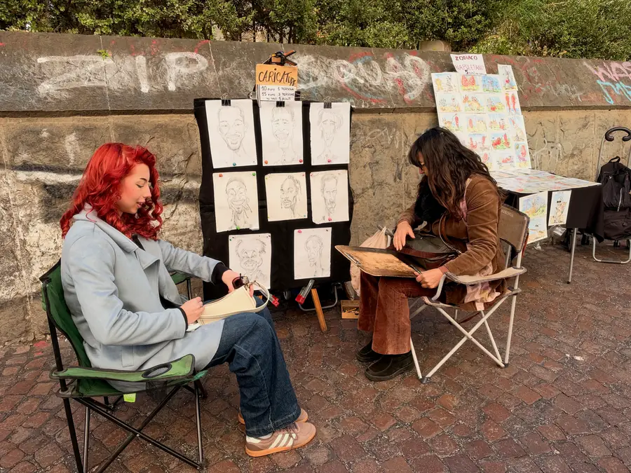

Why Naples, you ask? Yesterday evening, behind the wheel, we asked ourselves the same question. Whoever has driven around Naples will understand me. Whoever hasn't — better not to. There's no parking, the streets are narrow, and every driver is sure the rules were invented for somebody else. We got to our place, and thanks for that.

But today we left the car alone and went on foot. And the question went away by itself.

Naples in general is a city not for the steering wheel but for the feet. From the car window it seems noisy, peeling and senseless. But when you walk slowly, it turns out that behind every shabby facade stands a church some seven hundred years old. There are hundreds of churches here, they say, and almost every one is worth looking into.



We started with San Domenico Maggiore. It and Santa Chiara stand almost next to each other, on an old straight street called Spaccanapoli — “the one that splits Naples.” It runs exactly along the line of the ancient city: Naples was founded by the Greeks, after all, and the name itself means “New City.” The New City, by the way, is about two and a half thousand years old.
So, San Domenico Maggiore. It's a large Dominican church, built back under the Angevin kings. In the monastery attached to it Thomas Aquinas lived and taught. According to tradition, it was here that the crucifix spoke to him: “Thou hast written well of me, Thomas.” One can have different views of Latin theology, but when you stand where a man prayed for years and thought about God, the place is special all the same, for an Orthodox priest too.

Then Santa Chiara. It was built in the fourteenth century by King Robert of Anjou and Queen Sancha. In 1943, after a bombing, the church burned out, and it was restored almost from scratch, this time without the Baroque decorations. Austere Gothic — after the motley Neapolitan streets it's even a rest for the eyes.


Then we went down to the sea. Piazza del Plebiscito is huge, as if it had been built for some other, more solemn city. On one side is the Royal Palace, on the other the church of San Francesco di Paola with its semicircular colonnade. Anyone who has been to Rome will immediately recognize the Pantheon in it. We've just come from Rome, so we recognized it.
From the square it's a stone's throw to the waterfront and to Castel dell'Ovo — a castle that stands right on a small islet off the shore. It's the oldest castle in Naples. The name translates as “Egg Castle”: according to legend, the poet Virgil hid an egg in its foundations, and as long as it is intact, the city stands. Judging by the fact that Naples is still in place, the egg is fine.

That, really, was the whole day. No feats, no lines or tickets. San Domenico, Santa Chiara, the square, the castle by the water. We just walked and looked. And you know, sometimes on a journey it's exactly days like this that are needed — when you're not late for anything and aren't “ticking off” anything on a list. Rome is usually taken by storm. Naples can't be taken by storm, and it doesn't surrender. With it you can only stroll.

Friends, if you're going to Naples, my advice is simple, learned the hard way: leave the car somewhere outside the city and go on foot yourselves. The city will show you everything itself. Your nerves will be in better shape, and you'll see more.

Tomorrow, one more day in Naples.